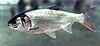

silver-carp

Has synonym(s): hypophthalmichthys molitrix
Definition: The silver carp (Hypophthalmichthys molitrix) is a species of freshwater cyprinid fish, a variety of Asian carp native to China and eastern Siberia, from the Amur River drainage in the north to the Xi Jiang River drainage in the south. Although a threatened species in its natural habitat, it has long been cultivated in China. By weight, more silver carp are produced worldwide in aquaculture than any other species of fish except for the grass carp. Silver carp are usually farmed in polyculture with other Asian carp, or sometimes with catla or other fish species.
Source: Wikipedia
Wikipedia Page (Something wrong with this association? Let us know.)
Wikidata Page (Something wrong with this association? Let us know.)